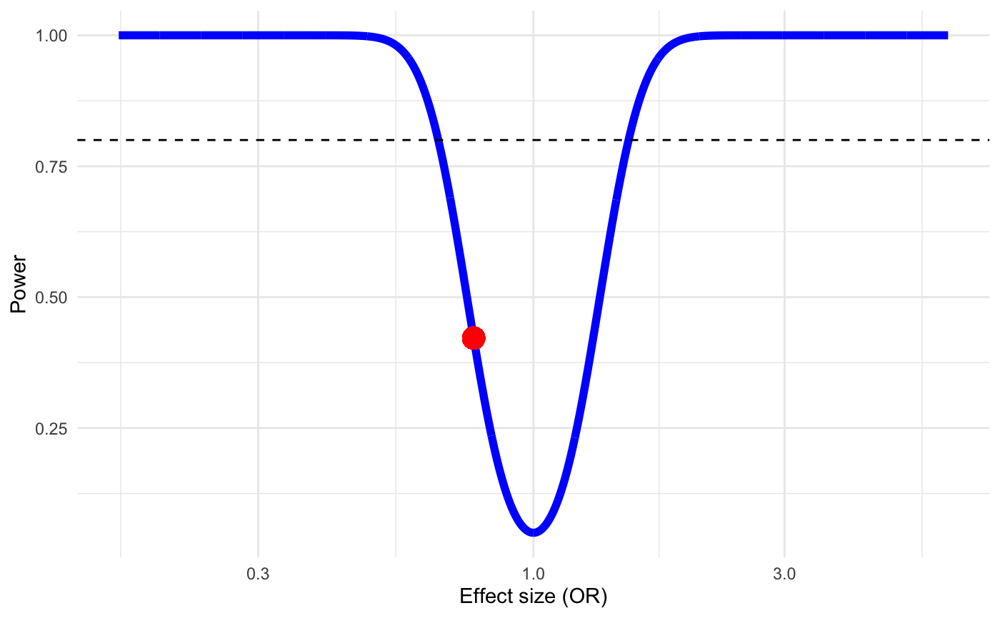
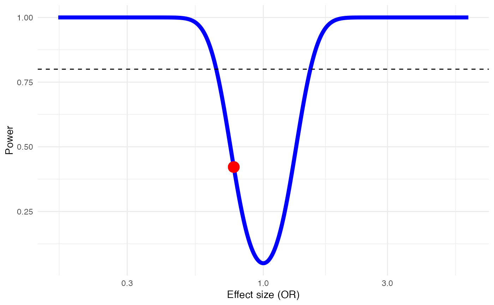

This function performs an a priori power estimation of a meta-analysis for different levels of assumed between-study heterogeneity.
power.analysis(d, OR, k, n1, n2, p = 0.05, heterogeneity = 'fixed')
| d | The hypothesized, or plausible overall effect size of a treatment/intervention under study compared to control, expressed as the standardized mean difference (SMD). Effect sizes must be positive numerics (i.e., expressed as positive effect sizes). |
|---|---|
| OR | The hypothesized, or plausible overall effect size of a treatment/intervention under study compared
to control, expressed as the Odds Ratio (OR). If both |
| k | The expected number of studies to be included in the meta-analysis. |
| n1 | The expected, or plausible mean sample size of the treatment group in the studies to be included in the meta-analysis. |
| n2 | The expected, or plausible mean sample size of the control group in the studies to be included in the meta-analysis. |
| p | The alpha level to be used for the power computation. Default is \(\alpha = 0.05\). |
| heterogeneity | Which level of between-study heterogeneity to assume for the meta-analysis. Can be either
|
Returns a list with two elements:
Plot: A plot showing the effect size (x), power (y), estimated power (red point) and
estimated power for changing effect sizes (blue line). A dashed line at 80% power is also provided as a visual threshold for sufficient power.
Power: The estimated power of the meta-analysis, expressed as a value between 0 and 1 (i.e., 0%-100%).
While researchers conducting primary studies can plan the size of their sample based on the effect size they want to find, the situation is a different in meta-analysis, where one can only work with the published material. However, researchers have some control over the number of studies they want to include in their meta-analysis (e.g., through more leniently or strictly defined inclusion criteria). Therefore, one can change the power to some extent by including more or less studies into the meta-analysis. Conventionally, a power of \(1-\beta = 0.8\) is deemed sufficient to detect an existing effect. There are four things one has to make assumptions about when assessing the power of a meta-analysis a priori.
The number of included or includable studies
The overall size of the studies we want to include (are the studies in the field rather small or large?)
The effect size. This is particularly important, as assumptions have to be made about how big an effect size has to be to still be clinically meaningful. One study calculated that for interventions for depression, even effects as small as SMD=0.24 may still be meaningful for patients (Cuijpers et al. 2014). If the aim is to study negative effects of an intervention (e.g., death or symptom deterioration), even very small effect sizes are extremely important and should be detected.
The heterogeneity of our studies’ effect sizes, as this also affects the precision of the pooled estimate, and thus its potential to find significant effects.
The power.analysis function implements the formula by Borenstein et al. (2011) to calculate
the power estimate. Odds Ratios are converted to d internally before the power is estimated, and
are then reconverted.
Harrer, M., Cuijpers, P., Furukawa, T.A, & Ebert, D. D. (2019). Doing Meta-Analysis in R: A Hands-on Guide. DOI: 10.5281/zenodo.2551803. Chapter 13
Cuijpers, P., Turner, E.H., Koole, S. L., Van Dijke, A., & Smit, F. (2014). What Is the Threshold for a Clinically Relevant Effect? The Case of Major Depressive Disorders. Depression and Anxiety, 31(5): 374–78.
Borenstein, M., Hedges, L.V., Higgins, J.P.T. and Rothstein, H.R. (2011). Introduction to Meta-Analysis. John Wiley & Sons.
# Example 1: Using SMD and fixed-effect model (no heterogeneity) power.analysis(d=0.124, k=10, n1=50, n2=50, heterogeneity = 'fixed')#> Fixed-effect model used.#> Power: 49.96%# Example 2: Using OR and assuming moderate heterogeneity pa = power.analysis(OR=0.77, k=12, n1=50, n2=50, heterogeneity = 'high') summary(pa)#> Power Analysis based on log-transformed OR. #> Random-effects model used (high heterogeneity assumed).#> Power: 42.18%